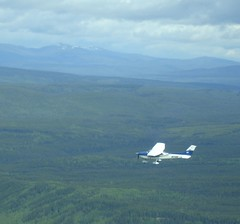
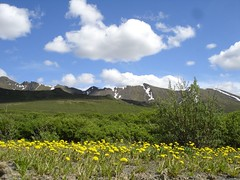

Inuvik to Ushuaia
Whitehorse, Yukon. Tomorrow we get to Inuvik!

We flew from mile 0 of the Alaska Highway all the way to Whitehorse, Yukon Territory. It's 10:11pm and the sun won't go down for more than an hour. But tomorrow the sun won't go down at all.
The flight was wonderful today - we hugged the river due to low-hanging clouds and had great views of beautiful places. The ride over the Continental Divide was spectacular.
Hope to update you more and provide some pictures from Inuvik, if we have internet access.
In Inuvik, SOUTH on the Dempster!
We made it to Inuvik and we're headed south on the Dempster Highway tomorrow morning! I'd hoped to have a picture of Inuvik for you but the library is closing so I'm rushing it.
480 miles to Dawson City. A store in Fort McPherson and the hotel at Eagle Plains are the only real things between here and there. It's almost all dirt, and of course we hear all the horror stories about it, like bears and mosquitoes and moose. I think we'll have a blast. We'll let you know in 10-14 days. We're glad to have you along with us!
We made it to the Eagle Plains Hotel!
Well, it took us six days but we made it to the halfway point on the Dempster Highway, the Eagle Plains Hotel. We've had a wonderful time - quite a stretch for us to do something this hard as the first thing on the tour, but we're well. The weather has been incredible. Because there's no night, the earth gets lots of warmth from the sun this time of year. In our first couple of days the temperature was in the 80s and 90s Fahrenheit! Really hot.
No bears! Nancy's worry level may be decreasing - she spent a lot of time talking with a woman whose extensive experience in the wild in this part of the world (and no problems with bears) gave Nancy more confidence to deal with possible encounters (and less fear that we'll have them).
And so far the mosquito season has hardly started. We have plenty of bites, but it's the kind of thing we've experienced before, not the intense disaster people talk about in July up here. However, we have a long ways to go... But we have mosquito outfits and spray and such.
Today we're taking a day off and just resting here at the Eagle Plains Hotel. We swapped a night's lodging and dinner with them in exchange for developing a website - http://eagleplainshotel.com - that they've never had before.
Beginnings
Well, we've been out for a week and have met the most amazing people. The stories that we're hearing are phenomenal. Between the stories are many incredible landscapes - the awesome Richardson Mountains that form the divide between the Arctic watersheds and the Pacific, between The Mackenzie and the Yukon.
No bears but lots of bear scat. I'm calming down a little bit.
We'll try to get some pictures uploaded and write some of the wonderful stories we've heard when we get to Dawson.
North Fork Pass

Dempster Highway Photos

We're getting showers, even when wild camping!
Christof and Gernot just starting north
We've met quite a number of cyclists here in Dawson City. What a treat to compare notes with new friends.
Truck bringing dust our way - near Fort McPherson
The Arctic Circle

The 24-hour day (and near-24-hour-day) that we've had is amazing. It's really light all the time. We have not used our camping headlights and won't for some time yet. We did bring blindfolds for sleeping at night and they've been fantastic.
Despite the 24-hour day, there is still a cycle to things. It cools off quite a bit at night, and warms up in the day. The insects know about the cycle and function quite adequately.